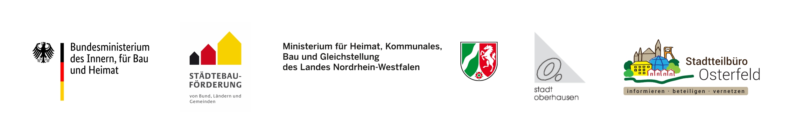

Meine tänzerische Forschungsarbeit wird von Juni – August 2021 gefördert!
Gefördert durch die Beauftragte der Bundesregierung für Kultur und Medien im Programm NEUSTART KULTUR, Hilfsprogramm DIS-TANZEN des Dachverband Tanz Deutschland.
Achtung zwei neue Projekte ab September!
Du hast Lust mit Menschen in Kontakt zu kommen, von dir zu erzählen und aktiv in deinen Stadtteil einzugreifen? Dann schaue unter Theater/Performance.
Du hast Lust dich mal wieder zu bewegen? Du willst Bewegungen selbst entwickeln, erforschen und Menschen begegnen? Dann schaue unter Tanz.
Theater/Perfomance
Just for a walk – Transkulturelle Spaziergänge
September – Dezember 2021
Treffe dich mit uns!
Immer montags um 9.30 – 11.30Uhr! (Fortlaufend!)
Geh mit uns spazieren!
Start: 06.09.21 um 9.30 Uhr
Komme ins Gespräch! Komme in Aktion!
Treffpunkt: Oberhausen-Osterfeld, vor dem Café Jedermann am Marktplatz
Nach dem erfolgreichen Projekt „Osterfeld erzählt“ machen wir weiter! Mit dem Projekt „Just for a walk-Transkulturelle Spaziergänge“ soll die Möglichkeit zur Begegnung und zu gemeinschaftlichen Aktionen im Stadtteil von Menschen unterschiedlicher kultureller und ethnischer Herkunft geschaffen werden.
Wir unternehmen jede Woche paarweise Spaziergänge durch den Stadtteil, durch Grünanlagen oder Wohnsiedlungen. Fragen von uns begleiten diese Spaziergänge. Was verbindet dich mit diesem Stadtteil, warum lebst du hier, was stört dich hier, wie kannst du was ändern? Im zweiten Teil des Spaziergangs kommen unsere Aktionskarten ins Spiel. Du willst was verändern? Dann tu es!
Mit Volker Pehl und Nicole E. Schillinger. Anmeldungen unter: nicole@schillinger-ttp.de
Gefördert durch Soziokultur NRW. Landesarbeitsgemeinschaft Soziokultureller Zentren NRW e.V.; dem Ministerium für Kultur und Wissenschaft des Landes Nordrhein-Westfalen; Bundesministerium des Innern, für Bau und Heimat; Städtebauförderung von Bund, Ländern und Gemeinden; Ministerium für Heimat, Kommunales, Bau und Gleichstellung des Landes Nordrhein-Westfalen; Stadt Oberhausen; Stadtteilbüro Osterfeld:
Kooperationspartner Caritas Oberhausen e.V.:
Tanz
SCHRiTTE
Ein Spaziergang im Rahmen eines (mixed abled) Tanzprojektes für Menschen mit und ohne Behinderung
Freitag, 03.12.21, 17.30 Uhr
Wir starten auf der Kolbergerstrasse, (unterhalb der Hausnummer 44) am Waldeingang
Der Eintritt ist kostenfrei.
Wir bitten aber um eine Anmeldung unter: nicole@schillinger-ttp.de
Die Veranstaltung findet draußen statt!
Bitte statten Sie sich mit entsprechender Kleidung aus.
Ebenfalls benötigen Sie ein Leuchtmittel (Taschenlampe, Laterne, Stirnlampe, o.ä.).
Gefördert durch das Ministerium für Kultur und Wissenschaft des Landes Nordrhein-Westfalen. Förderfonds Kultur und Alter:
Kooperationspartner Alsbachtal Leben mit Behinderung, Verein für körper- und mehrfachbehinderte Menschen:
Osterfeld erzählt – Ein Stadtteiltheaterprojekt
Februar – Juli 2019
»Osterfeld erzählt!« soll ein interkulturelles Theaterprojekt mit Menschen ab 60 Jahren sein, die Erfahrungen mit dem Stadtteil Oberhausen Osterfeld gesammelt haben. Über das Netzwerk der Projektpartner werden die Teilnehmer auf das Projekt aufmerksam gemacht und gesucht. Es sollen Grundkenntnisse der schauspielerischen wie choreografischen Arbeit und der Präsentation im öffentlichen Raum vermittelt werden. Bei den wöchentlichen Proben sind die Teilnehmenden eingeladen sich u. a. durch Methoden des biographischen Theaters (z. B. Forumtheater nach Augusto Boal) mit ihren Erfahrungen zum Thema auseinanderzusetzen. Auch das Erforschen der Stadtteilgeschichte Osterfelds, die Erfassung der Umgebung und Atmosphäre des Stadtteils, wie auch der Kontakt zu Bewohner*innen über die Projektteilnehmenden hinaus, sollen Bestandteile des Projektes sein. Dadurch möchten wir das Verständnis und die Verbundenheit zum Stadtteil Osterfeld und ihrer Bewohner*innen erhöhen und ihnen die Möglichkeit bieten sich künstlerisch tätig in den Stadtteil einzubringen. Geplant sind zwei Abschlussaufführungen die in Form eines Stationentheaters an thematisch relevanten Orten im Stadtteil stattfinden sollen.
Geleitet wird das Projekt von Volker Pehl und Nicole E. Schillinger die bereits 2017 ein gemeinsames Theaterprojekt unter anderem mit Menschen ab 55 Jahren geleitet haben.
Gefördert vom:
Weitere Förderer:
Tanztheater
mit Menschen über 55 Jahren und Nicole Elisabeth Schillinger
Neuer Projektstart
Mitte September 2019
Anmeldungen unter: nicole@schillinger-ttp.de
Wechsel und Brüche
Samstag 26. Januar 2019, 20 Uhr | Premiere
Sonntag 27. Januar 2019, 16 Uhr
12 Tänzer*innen betrachten Wechsel und Brüche. In ihrem Leben, im Material, in Wort, Musik und Bewegung. Ein biographisches Bewegungstheater mit Blick nach vorne.
Mit: Christa Balke, Silke Beller, Brigitte Gärtner,
Doris Häsel, Renate Karthausen, Brigitte Kawik, Marion Langenfurth,
Rita Maaßen, Alfred Quaiser, Marlis Schillinger, Wibke Schroer,
Wilosch Schulz, Assistenz: Lisa Hoffmann,
Choreographische Begleitung: Nicole Elisabeth
Schillinger
Ort: Ringlokschuppen Ruhr | Am Schloß Broich 38 |
45479 Mülheim an der Ruhr
Vita – Nicole Elisabeth Schillinger
Dipl. Theaterpädagogin (FH Osnabrück, Standort Lingen)
Tanzpädagogin (Master-Ebene nach DQR, Akademie der
Kulturellen Bildung)
Dipl. Heilpädagogin (Ev. FH, Bochum)
Promovendin (Universität Hildesheim bei Pof. Dr.
Reinwand-Weiss. Über Anna Halprins Denk- und Handlungsweise in der
praktischen Umsetzung)
Ab 2003 arbeitete sie sechs Jahre lang fest an Theatern, davon fünf Jahre am Theater Oberhausen. Seit 2009 inszeniert, choreografiert und doziert sie freiberuflich unter anderem für den Ringlokschuppen Ruhr Mülheim. Sie realisierte bereits über zwanzig Theater- und Tanzproduktionen mit allen Altersgruppen, bildete Lehrer*innen fort, organisierte und leitete zahlreiche kleine Theaterfestivals. Seit 2012 arbeitet sie schwerpunktmäßig mit Menschen ab 55 Jahren.
Vita – Volker Pehl
Hauptberufliche Tätigkeit als Grafiker
Theaterpädagoge (seit April 2017)
Schauspieler im Kinder- und Erwachsenentheater (Langjährige
Erfahrung in einem semiprofessionellen Theaterverein)
Projekte:
Theaterprojekt zum Thema »Soziales Lernen mit theaterpädagogischen
Methoden« für Kinder im Grundschulalter an der Osterfelder-Heide
Schule in Oberhausen.
»homebase:Marxloh«, Theaterprojekt mit geflüchteten Jugendlichen in
Duisburg-Marxloh.
»Neue Heimat«, Theaterprojekt mit Heimatvertriebenen Frauen nach dem
2. Weltkrieg und geflüchteten Frauen aus den Kriegsgebieten Syrien,
Afghanistan und Irak. Bei theatervolk.
Fortbildung:
»Hybride Kunst« – Kunst trifft auf
Leben-Arbeiten mit biografischem Material am Landesbüro Freie
Darstellende Künste in Bochum.